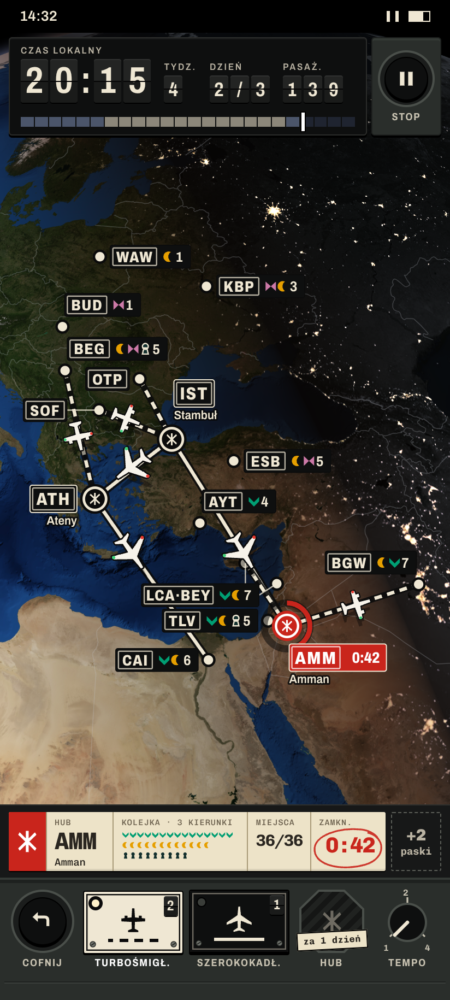
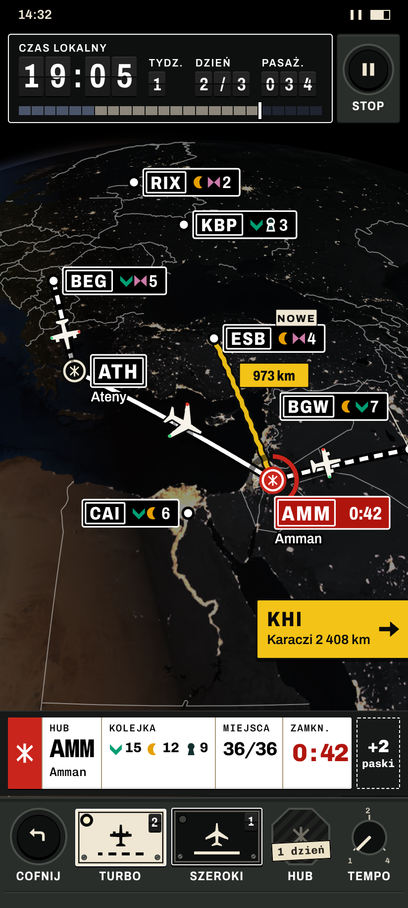

Globus K2 (NASA Blue Marble / Black Marble, domena publiczna). Zmiany: dok narzędzi jako pulpit kontrolera (kształt = rodzaj: okrągły przycisk = akcja natychmiastowa, pokrętło = ustawienie, prostokątna tabliczka emaliowana = samolot do przydzielenia, z linią trasy, którą lata; ośmiokąt = budowa); żółty tylko dla kierunku i głównej akcji (rysowana trasa, jej odległość, znak kierunku przy krawędzi, główny przycisk), tabliczki lotnisk kremowe na czarnym; etykiety rozmieszczane regułami z poziomami szczegółowości; pieczątka zatoru we własnym polu wydruku; stan wysokiego kontrastu z tekstem 130%. Kroje: Archivo i Chivo Mono (SIL OFL). Kadry 412×915 pt, PNG 824×1830.
Gra · noc 19:05poziom 1: kod, kolejka glifów, miasto; pulpit
Gra · dzień 11:40ta sama sytuacja w świetle dnia
Gra · gęsta sieć (nowy)16 lotnisk, 8 tras; poziom 2, kody IATA, grupa LCA·BEY
Kontrast + tekst 130% (nowy)biel na czerni, grubsze trasy, poziom 2, krótkie etykiety
Menu głównetablica odlotów; żółty tylko na głównej akcji
Koniec tygodniaprzydział: weź jeden pasek
Raport końca grywydruk, pieczątka we własnym polu



